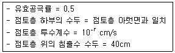
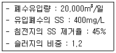
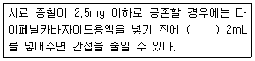
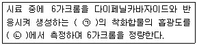
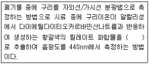

1과목: 폐기물 개론
1. 도시폐기물을 파쇄할 경우 X90=2.5cm로 하여 구한 X0(특성입자)는? (단, Rosin Rammler 모델 적용, n=1)
2. 폐기물 적재차량 중량이 15,000kg, 빈 차의 중량이 11,000kg, 적재함의 크기는 가로 300cm, 세로 150cm, 높이 200cm일 때 단위용적당 적재량(t/m3)은?
3. 고형물의 처리방법 중 열분해에 관한 설명으로 틀린 것은?
4. 인구가 50,000명, 1인 1일 쓰레기 배출량은 1kg이다. 쓰레기 밀도가 320kg/m3라고 할 때, 적재량이 20.4m3 차량이 하루에 몇 번 운반해야 하는가? (단, 차량 1대 기준이며 기타 조건은 고려하지 않음)
5. 투입량이 1ton/h이고, 회수량이 750kg/h(그중, 회수 대상물질은 600kg/h)이며 제거량 중 회수대상물질은 70kg/h일 때 선별효율은? (단, Worrell식 적용)
6. 폐기물의 성상분석 단계로 가장 알맞은 것은?
7. 폐기물의 운송을 돕기 위하여 압축할 때, 부피감 소율(Volume Reduction)이 45%이었다. 압축비 (Compaction Ratio)는?
8. 어느 도시의 폐기물 수거량이 2,500,000톤/년, 수거인부 3,000명, 1일 작업시간 8시간, 연간 작업일 수 340일 일 때 MHT는?
9. 함수율 95%인 폐기물 10톤을 탈수를 통해 함수율을 각각 85% 및 75%로 감소시킨 경우, 탈수 후 남은 무게(톤)는 각각 얼마인가? (단, 비중은 1.0 기준)
10. 적환장 필요성에 대한 다음 설명 중 가장 옳은 것은?
11. 폐기물 발생량 조사방법 중 주로 산업폐기물의 발생량을 추산할 때 사용하는 것은?
12. 함수율이 77%인 하수슬러지 20ton을 함수율 26%인 1000ton의 폐기물과 섞어서 함께 처리하고자 한다. 이 혼합폐기물의 함수율은? (단, 비중은 1.0기준)
13. 슬러지를 처리하기 위하여 생슬러지를 분석한 결과 수분은 90%, 총 고형물 중 휘발성 고형물은 70%, 휘발성 고형물의 비중은 1.1, 무기성 고형물의 비중은 2.2였다. 생슬러지의 비중은? (단, 무기성 고형물 + 휘발성 고형물 = 총 고형물)
14. 폐기물 발생량 예측방법 중 하나의 수식으로 쓰레기 발생량에 영향을 주는 각 인자들의 효과를 총괄적으로 나타내어 복잡한 시스템의 분석에 유용하게 사용할 수 있는 것은?
15. 1t/m3의 밀도를 갖는 쓰레기 시료를 압축하여 밀도를 3t/m3으로 증가시켰다. 이때의 부피감소율은?
16. 인구 5만명인 어느 도시에서 쓰레기를 소각처리하기 위해 분리수거를 하고 있다. 조사결과 아래와 같은 자료를 얻었을 때 가연성분 전량을 소각로로 운반하는데 필요한 차량은 몇 대인가? (단, 쓰레기 조성 : 가연성 60wt%, 불연성 40wt%, 쓰레기 발생량 : 1.8kg/인·일, 쓰레기 차의 적재밀도 : 0.6t/m3, 쓰레기차의 적재용량 : 4.5m3, 적재율 : 0.8, 수거차 일일 평균 왕복회수 : 3회/대·일, 일일 기준)
17. 다음 중 폐기물의 파쇄목적이 잘못 기술된 것은?
18. 전단파쇄기에 대한 설명으로 틀린 것은?
19. 다음 중 폐기물의 관거(Pipeline)를 이용한 수거 방식에 관한 설명으로 옳지 않은 것은?
20. 수거노선 설정방법으로 틀린 것은?
2과목: 폐기물 처리 기술
21. 매립장에서 침출된 침출수가 다음과 같은 점토로 이루어진 90cm의 차수층을 통과하는데 걸리는 시간은 얼마인가?

22. 유기적 고형화 기술에 대한 설명으로 틀린 것은? (단, 무기적 고형화 기술과 비교)
23. 슬러지처리를 하기 위해 위생처리장 활성슬러지 (함수율 99%) 40m3를 농축조에 넣어 농축한 결과 슬러지의 농도가 35,000mg/L가 되었다. 농축된 슬러지의 양(m3)은? (단, 슬러지 비중은 1.0으로 가정함)
24. 6.3%의 고형물을 함유한 150,000kg의 슬러지를 농축한 후, 농축슬러지를 소화조로 이송할 경우의 농축 슬러지의 무게는 70,000kg이다. 이때 농축된 슬러지의 고형물 함유율은? (단, 슬러지의 비중은 1.0으로 가정하고, 상등액의 고형물함량은 무시한다.)
25. 다음과 같은 조건의 침전지에서 1일 발생하는 슬러지의 부피는? (단, 기타사항은 고려하지 않음)

26. 혐기성 소화공법에 비해 호기성 소화공법이 갖는 장 · 단점이라 볼 수 없는 것은?
27. COD/TOC＜ 2.0, BOD/COD＜ 0.1, 인 고령화된 매립지에서 발생되는 침출수 처리의 효율성이 불량한 공정은? (단, COD(mg/L)는 500보다 작다)
28. 점토의 수분함량 지표인 소성지수, 액성한계, 소성한계의 관계로 옳은 것은?
29. 1일 쓰레기 발생량이 100t인 도시의 쓰레기를 깊이 3.0m의 도랑식(Trench)으로 매립하는데 발생된 쓰레기 밀도 500kg/m3, 도랑 점유율 60%, 부피감소율이 40%일 경우, 3년간 필요한 부지면적은 몇 m2인가? (단, 기타 조건은 고려하지 않음)
30. 어느 하수처리장에서 발생한 생슬러지 내 고형물은 유기물(VS)이 85%, 무기물(FS)이 15%로 구성되어 있으며, 이를 혐기소화조에서 처리하자 소화슬러지 내 고형물은 유기물(VS)이 70%, 무기물(FS)이 30%로 되었다면 이 때 소화율은?
31. 호기성 소화방식으로 분뇨를 500m3/day로 처리하고자 한다. 1차 처리에 필요한 산기관수는? (단, 분뇨 BOD 20,000mg/L, 1차 처리효율 60%, 소요공기량 50m3/BOD kg, 산기관 통풍량 0.5m3/min·개)
32. 글리신(C2H5O2N) 5mole이 혐기성소화에 의해 완전 분해될 때 생성 가능한 이론적인 메탄가스량은? (단, 표준상태 기준, 분해 최종산물은 CH4, CO2, NH3)
33. 다음 슬러지의 물의 형태 중 탈수성이 가장 용이한 것은?
34. 함수율 95% 분뇨의 유기탄소량이 TS의 35%, 총 질소량은 TS의 10%이다. 이와 혼합할 함수율 20%인 볏짚의 유기탄소량이 TS의 80%이고 총 질소량이 TS의 4%라면 분뇨와 볏짚의 무게비 2:1로 혼합했을 때 C/N비는? (단, 비중은 1.0, 기타 사항은 고려하지 않음)
35. 진공 여과 탈수기로 투입되는 슬러지량이 240m3/hr이고 슬러지 함수율 98%, 여과율(고형물기준)이 120kg/m2·hr의 조건을 가질 때 여과면적은? (단, 탈수기는 연속가동하며 슬러지 비중은 1.0 기준)
36. 폐기물 매립지에 소요되는 연직차수막과 표면차 수막의 비교설명으로 잘못된 것은?
37. 함수율이 95%이고 고형물 중 유기물이 70%인 하수슬러지 300m3/일을 소화시켜 유기물의 2/3가 분해되고 함수율 90%인 소화슬러지를 얻었다. 소화슬러지의 양은? (단, 슬러지 비중은 1.0)
38. 1일 폐기물 배출량이 700t인 도시에서 도랑(Trench)법으로 매립지를 선정하려 한다. 쓰레기의 압축이 30%가 가능하다면 1일 필요한 면적은? (단, 발생된 쓰레기의 밀도는 250kg/m3, 매립지의 깊이는 2.5m)
39. 복잡퇴비화시 함수율 85%인 슬러지와 함수율 40%인 톱밥을 1:2로 혼합한 후의 함수율과 퇴비화의 적정성 여부에 관한 설명으로 옳은 것은?
40. 폐기물의 고화처리방법 중 피막형성법의 장점으로 옳은 것은?
3과목: 폐기물 소각 및 열회수
41. 건조 슬러지의 원소분석 결과 분자식이 C5H7O2N이라면 이 슬러지 10kg을 완전 연소하는데 필요한 이론 공기의 질량(kg)은? (단, 표준상태 기준)
42. 분자식이 CmHn인 탄화수소가스 1Sm3의 완전연소에 필요한 이론 공기량(Sm3/Sm3)은?
43. Rotary Kiln 소각로에 대한 설명으로 틀린 것은?
44. 가로 1.2m, 세로 2.0m, 높이 11.5m의 연소실에서 저위발열량 10,000kcal/kg의 중유를 1시간에 100kg 연소한다. 연소실 열발생률(kcal/m3·hr)은?
45. 착화온도에 대한 설명 중 틀린 것은?
46. 고위발열량이 16,820kcal/Sm3인 에탄(C2H6)을 연소시킬 때 이론 연소온도(℃)는? (단, 이론습연소 가스량 21Sm3/Sm3이며, 연소가스의 정압비열은 0.63 kcal/Sm3·℃, 연소용 공기, 연료온도는 15℃, 공기는 예열하지 않으며, 연소가스는 해리되지 않음)
47. 처리가스유량이 2000m3/hr이고 여과포의 유효면적이 5m2일 때 여과집진장치의 겉보기 여과속도(cm/s)는?
48. 메탄 3Sm3를 공기과잉계수 1.2로 완전연소시킬 경우 습윤연소가스량(Sm3)은?
49. 유동층 소각로의 장단점으로 틀린 것은?
50. 도시쓰레기 1톤을 소각처리하고자 한다. 쓰레기의 조성이 C:70%, H:20%, O:10%일 때 이론 공기량은?
51. 수분이 적고 저위발열량이 높은 폐기물에 적합하며 폐기물의 이송방향과 연소가스 흐름방향이 같은 소각방식은?
52. 옥탄(C8H18)이 완전연소할 때 AFR은? (단, kgmol air/kg mol fuel)
53. 백필터를 통과한 가스의 분진농도가 8mg/Sm3이고 분진의 통과율이 10%라면 백필터를 통과하기 전 가스중의 분진농도는?
54. 전기 집진장치에 관한 내용으로 틀린 것은?
55. 어떤 폐기물의 원소조성이 다음과 같을 때 연소시 필요한 이론 공기량은? (단, 중량기준, 표준상태기준으로 계산함) [가연성분:70%(C:60%, H:10%, O:25%, S:5%), 회분:30%]
56. 화상부하율이 300kg/m2·hr인 연소실에 가연성 폐기물을 하루 7ton을 소각시킬 때 필요한 연소실의 화상면적(m2)은? (단, 하루 8시간 소각을 행한다)
57. 열교환기 중 과열기에 관한 설명으로 틀린 것은?
58. 어떤 소각로에서 배출되는 가스량은 8000kg/hr이고 온도는 1000℃(1기압 기준)이다. 배기가스는 소각로 내에서 2초가 체류한다면 소각로 용적(m3)은? (단, 표준상태에서 배기가스 밀도는 0.2kg/m3)
59. SO2 100kg의 표준상태에서 부피는? (단, SO2는 이상기체이고, 표준상태로 가정한다)
60. 메탄 80%, 에탄 11%, 프로판 6%, 나머지는 부탄으로 구성된 기체연료의 고위 발열량이 10000kcal/Sm3이다. 기체연료의 저위발열량(kcal/Sm3)은? (단, 메탄:CH4, 에탄:C2H6, 프로판:C3H8, 부탄:C4H10, 부피기준)
4과목: 폐기물 공정시험기준(방법)
61. pH 측정에 관한 설명으로 옳지 않은 것은?
62. 시료 채취시 시료용기에 기재하는 사항과 가장 거리가 먼 것은?
63. 다음은 크롬(자외선/가시선 분광법 기준) 정량시 간섭물질에 관한 내용이다. 괄호 안에 옳은 내용은?

64. 다음 총칙에 관한 내용으로 옳은 것은?
65. 다음 분석항목 중 원자흡수분광광도법 측정이 적용되지 않는 것은? (단, 폐기물공정시험기준(방법)기준)
66. 폐기물의 강열감량(%)과 유기물 함량(%)을 구하고자 측정한 결과, 도가니 무게:50.43g, 탄화(강열) 전의 도가니+시료 무게:74.59g, 탄화(강열) 후의 도가니+시료 무게:55.23g 이었다면 강열감량과 유기물 함량은? (단, 수분 20%, 고형물 80%)
67. 다음은 6가크롬(자외선/가시선 분광법)의 측정원리에 관한 내용이다. 괄호 안에 옳은 내용은?

68. 폐기물공정시험기준(방법)에 적용되는 관련용어에 관한 내용으로 틀린 것은?
69. 시료의 전처리 방법에 관한 설명으로 틀린 것은?
70. 분석하고자 하는 대상폐기물의 양이 100톤 이상 500톤 미만인 경우에 채취하는 시료의 최소수는?
71. 기체크로마토그래피를 이용한 유기인의 정량방법에 관한 설명으로 틀린 것은?
72. 자외선/가시선 분광광도계의 광원부의 광원 중자외부의 광원으로 주로 사용되는 것은?
73. pH 표준용액 조제에 관한 설명으로 옳지 않은 것은?
74. 기름성분을 중량법으로 측정할 때 정량한계 기준은?
75. 비소(자외선/가시선 분광법)분석 시 발생되는 비화수소를 다이에틸다이티오카르바민산은 피리딘 용액에 흡수시키면 나타나는 색은?
76. 다음의 실험 총칙에 관한 내용 중 틀린 것은?
77. 정도보증/정도관리에 적용하는 기기검출한계에 관한 내용으로 옳은 것은?
78. 함수율이 95%인 시료의 용출시험 결과를 보정하기 위해 곱하여야 하는 값은 얼마인가?
79. 시안(자외선/가시선 분광법 기준) 시험방법에 대한 설명으로 틀린 것은?
80. 다음은 구리(자외선/가시선 분광법 기준) 측정에 관한 내용이다. 괄호 안에 옳은 내용은?

5과목: 폐기물 관계 법규
81. 폐기물 발생 억제지침 준수의무 대상 배출자의 규모기준으로 옳은 것은?
82. 설치승인을 받아 폐기물처리시설을 설치한 자가 그가 설치한 폐기물처리시설의 사용을 끝내거나 폐쇄하려면 환경부장관에게 신고하여야 하며 신고한자 중 대통령령으로 정하는 폐기물을 매립하는 시설을 사용종료하거나 폐쇄한 자는 그 시설로 인한 주민의 건강, 재산 또는 주변환경의 피해를 방지하기위해 사후관리를 하여야 한다. 사후관리기간으로 옳은 것은? (단, 사후관리가 필요하다고 판단되는 경우)
83. 사업장폐기물을 폐기물처리업자에게 위탁하여 처리하려는 사업장폐기물 배출자는 환경부장관이 고시하는 폐기물 처리가격의 최저액보다 낮은 가격으로 폐기물처리를 위탁하여서는 아니 된다. 이를 위반하여 폐기물 처리가격의 최저액보다 낮은 가격으로 폐기물처리를 위탁한 자에 대한 과태료 부과기준은?
84. 폐기물통계조사 중 폐기물 발생원 등에 관한 조사를 위해 5년마다 현장조사를 기초로 작성하여야 하는 항목으로 틀린 것은?
85. 폐기물관리법에서 사용하는 용어의 뜻으로 틀린것은?
86. 폐기물 처분시설 또는 재활용시설 중 음식물류 폐기물을 대상으로 하는 시설의 기술관리인 자격기준으로 틀린 것은?
87. 의료폐기물의 종류 중 일반의료폐기물이 아닌것은?
88. 폐기물처리업의 시설, 장비, 기술능력의 기준 중 폐기물 수집, 운반업(지정폐기물 중 의료폐기물을 수집, 운반하는 경우) 장비 기준으로 옳은 것은?
89. 폐기물처리업 중 폐기물 중간재활용업, 폐기물 최종재활용업 및 폐기물 종합재활용업의 변경허가를 받아야 할 중요사항과 가장 거리가 먼 것은?
90. 시도지사가 폐기물처리 신고자에게 처리금지 명령을 하여야 하는 경우, 그 처리금지를 갈음하여 부과할 수 있는 최대 과징금은?
91. 기술관리인을 두어야 할 폐기물처리시설 기준으로 틀린 것은? (단, 폐기물처리업자가 운영하는 폐기물처리시설 제외)
92. 폐기물처리시설 종류의 구분이 틀린 것은?
93. 환경부령으로 정하는 폐기물처리시설의 설치를 마친 자는 환경부령으로 정하는 검사기관으로부터 검사를 받아야 한다. 폐기물처리시설이 시멘트 소성로인 경우의 검사기관으로 틀린 것은? (단, 환경부장관이 고시한 기관 제외)
94. 지정폐기물의 종류에 관한 내용으로 틀린 것은?(단, 특정시설에서 발생되는 폐기물, 부식성 폐기물 기준)
95. 특별자치도지사, 시장·군수·구청장은 조례에 정하는 바에 따라 종량제 봉투 등의 제작, 유통, 판매를 대행하게 할 수 있다. 이를 위반하여 대행계획을 체결하지 아니하고 종량제 봉투 등을 제작 유통한 자에 대한 벌칙 기준은?
96. 의료폐기물 발생 의료기관 및 시험, 검사기관에 대한 기준으로 옳은 것은?
97. 폐기물처리업자의 폐기물 보관량과 처리기한에 관한 내용으로 옳은 것은? (단, 폐기물 수집, 운반업자가 임시보관장소에 폐기물을 보관하는 경우, 의료폐기물 외의 폐기물 기준)
98. 대통령령으로 정하는 폐기물처리시설을 설치, 운영하는 자는 그 폐기물처리시설의 설치, 운영이 주변 지역에 미치는 영향을 3년마다 조사하여 그 결과를 환경부 장관에게 제출하여야 한다. 다음 중 대통령령으로 정하는 폐기물처리시설 기준으로 틀린 것은?
99. 대통령령으로 정하는 폐기물처리시설을 설치, 운영하는 자는 그 처리시설에서 배출되는 오염물질을 측정하거나 환경부령으로 정하는 측정기관으로 하여금 측정하게 하고 그 결과를 환경부장관에게 제출하여야 한다. 환경부령으로 정하는 측정기관과 가장 거리가 먼 것은?
100. 폐기물처리 공제조합의 설립에 관한 내용으로 틀린 것은?